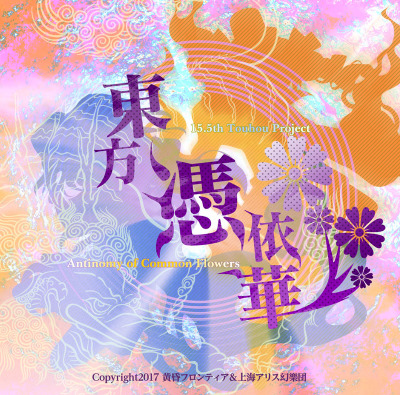

東方憑依華 ～ Antinomy of Common Flowers

Touhou Project 15.5
Developer: Twilight Frontier & Team Shanghai Alice
Release Year: 2017
Platform: Windows
Soundtrack features multiple artists
Touhou Wiki
Gameplay Sample
Soundtrack